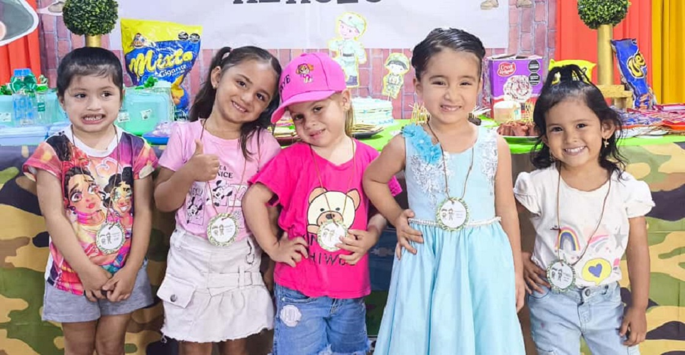

Programa de Atención Integral: Etapas y Metodología
Nuestro modelo se enfoca en el desarrollo integral y el cumplimiento de la Ruta Integral de Atenciones (RIA). Cada etapa tiene objetivos medibles y acciones específicas que garantizan un crecimiento armónico en las cuatro áreas del ser humano.
Salud y Nutrición: Control y Monitoreo
Monitoreo de Crecimiento: Antropometría mensual (peso, talla, PC) a todos los participantes para prevención de desnutrición.
Valoración Pediátrica: Chequeos médicos integrales cada seis meses con el profesional, incluyendo seguimiento a vacunas.
Metodologias de Crianza: Nuestra metodología se enfoca en la Ruta Integral de Atenciones (RIA). El seguimiento es riguroso e incluye la Antropometría mensual (Peso, Talla, PC) para asegurar el crecimiento y la prevención de la desnutrición. Además, se promueven las pautas de buena alimentación y se exige el mantenimiento de vacunas al día como requisito indispensable para la salud integral del participante.
Valoración Psicologica: La valoración psicológica es un proceso continuo realizado por el equipo psicosocial (psicólogos y trabajadores sociales) para apoyar la estabilidad emocional y el entorno familiar. Las valoraciones son periódicas y se ajustan a las necesidades. El enfoque se centra en el manejo de emociones, la orientación en pautas de crianza positiva y el fortalecimiento de los lazos familiares y el bienestar socioemocional del hogar..
1. Supervivencia (2 Meses Gestación - 11 meses)

Ellas son: María, Sofía, Valentina, Lucía y Camila.
- Objetivos: Garantizar un inicio de vida saludable y un vínculo afectivo seguro a través del fortalecimiento de las capacidades maternas (gestantes y cuidadoras).
- Trabajo Específico: Acompañamiento en el Hogar (Casa) y encuentros grupales de sensibilización. Énfasis en el desarrollo de los 5 sentidos y estimulación temprana.
- Indicador Clave: Porcentaje de bebés con peso y talla adecuados al nacer; Tasa de lactancia materna exclusiva hasta los 6 meses.
2. Caminadores (1 Año - 2 Años con 11 meses)
Ellas son: María, Sofía, Valentina, Lucía y Camila.
- Objetivos: Promover la autonomía funcional, potenciar el desarrollo del lenguaje y la motricidad, sentando bases para la interacción social.
- Trabajo Específico: Modelo Casa y Centro. Combina visitas de acompañamiento familiar en el hogar y Encuentros Grupales en el CDI enfocados en el autocuidado y la exploración.
- Indicador Clave: Nivel de desarrollo de lenguaje y habilidades motoras finas/gruesas según las escalas de desarrollo infantil para el rango de edad.
3. Exploradores (3 Años - 5 Años con 11 meses)
Conozcan a Dalia, Naslhy, Samara, Eileen y Lauren. Ellas representan la trayectoria integral, habiendo sido acompañadas por el CDI desde la etapa de gestación hasta hoy en Exploradores.
- Objetivos: Garantizar un inicio de vida saludable y un vínculo afectivo seguro a través del fortalecimiento de las capacidades maternas.
- Trabajo Específico: Acompañamiento en el Hogar (Casa) y encuentros grupales de sensibilización. Énfasis en el desarrollo de 5 sentidos y estimulación temprana.
- Indicador Clave: Porcentaje de bebés con peso y talla adecuados al nacer; Tasa de lactancia materna exclusiva hasta los 6 meses.
Propósito Espiritual y Transformación
Nuestro objetivo fundamental es la transformación integral. Guiamos a cada familia a aceptar a Jesús como Salvador para que reciban la protección y el propósito divino en sus vidas. Esta base espiritual fortalece las cuatro áreas del ser humano, impactando la comunidad desde el hogar.
Focalización y Requisitos Clave
- Rango de Edad: Principalmente Gestación hasta 1 mes de nacido. Cupos de 3 a 5 años son esporádicos.
- Inscripciones: Altamente limitadas y esporádicas. No hay calendario fijo; la prioridad es para gestantes.
- Aportes: Cuota mensual de $3.000 y 20% del valor de la medicina (si aplica).
- Permanencia: Requiere compromiso estricto de asistencia, participación activa, buen comportamiento y ausencia de vicios.
- Padrinos: Comunicación estrictamente por cartas o visitas programadas. Prohibido el contacto por redes sociales.
Pilar Espiritual: Transformación y Fe
- FORMACIÓN DE VALORES: Enseñanza constante de principios y valores bíblicos (respeto, honestidad, amor) como base del desarrollo del carácter.
- CONSEJERÍA FAMILIAR: Acceso a consejería especializada para la sanación de heridas, fortalecimiento matrimonial y pautas de crianza centradas en el Evangelio.
- PROPÓSITO Y PROTECCIÓN: Invitación a la familia a **aceptar a Jesús como Salvador** para garantizar un propósito de vida y la protección espiritual para el niño.
- SOPORTE COMUNITARIO: Inclusión a la comunidad de la Iglesia para soporte emocional, espiritual y oración continua en momentos de dificultad.
- INTEGRALIDAD TOTAL: El área espiritual es la que sustenta el éxito de las áreas cognitiva, física y socioemocional, logrando una transformación completa.